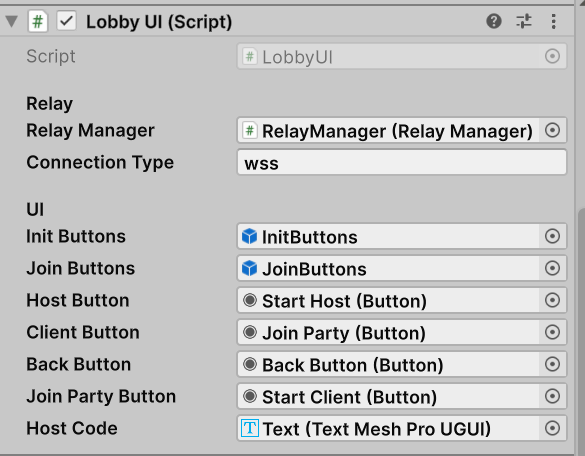

Exercise 8: Unity Relay & WebGL Deployment
By the end of this exercise, you should understand how to configure and integrate Unity Relay for peer-to-peer multiplayer connectivity without port forwarding, implement asynchronous network lobby logic with Unity Services, adapt network transport for WebGL using WebSockets, and build and publish your multiplayer project to Unity Play.
Check the following links to dive deeper into Unity Multiplayer Services and asynchronous programming:
- Multiplayer Services (MPS) SDK Installation
- Unity Relay Servers
- Async/Await Support in Unity
- Unity Play Platform
1. Unity Cloud Services & Project Linking
Before implementing Relay in code, your Unity Editor project must be linked to your Unity Cloud Organization. This authorizes your game clients to communicate with Unity Authentication and Relay services.
- Verify your account session: Ensure you are signed in with your Unity ID in both the Unity Hub and the top corner of the Unity Editor.
- Open Project Services: Navigate to
Edit > Project Settingsand select the Services tab. - Link the Project: Click Use an existing Unity project ID (or Create a new Unity project ID if you haven't created one in your Unity Gaming Services dashboard). Select your Organization and define your cloud project name.
- Enable Relay and Authentication: Verify in the dashboard or Services window that both the Authentication and Relay packages/services are active.
2. Unity Relay Architecture
In standard local host setups (LAN / direct IP), the host machine acts as the listener server. However, players connecting over the internet often sit behind restrictive NATs and firewalls, which prevents direct inbound connections without manual router port forwarding.
Unity Relay solves this by placing an intermediate relay server in the cloud:
- The Host requests an allocation from Unity Relay and receives a unique, short alphanumeric Join Code.
- The Clients enter this Join Code to retrieve the relay server's connection endpoints.
- All network traffic routes securely through the Relay server without exposing private IP addresses or requiring port forwarding.
3. Implementing RelayManager
The RelayManager.cs script handles service authentication, allocates relay slots, fetches the join code for the host, and binds the connection data to the UnityTransport component attached to your NetworkManager.
using System.Threading.Tasks;
using Unity.Netcode;
using Unity.Netcode.Transports.UTP;
using Unity.Services.Authentication;
using Unity.Services.Core;
using Unity.Services.Relay;
using Unity.Services.Relay.Models;
using UnityEngine;
public class RelayManager : MonoBehaviour
{
public async Task<string> StartHostWithRelay(int maxConnections, string connectionType)
{
await UnityServices.InitializeAsync();
if (!AuthenticationService.Instance.IsSignedIn)
{
await AuthenticationService.Instance.SignInAnonymouslyAsync();
}
var allocation = await RelayService.Instance.CreateAllocationAsync(maxConnections);
NetworkManager.Singleton.GetComponent<UnityTransport>().SetRelayServerData(AllocationUtils.ToRelayServerData(allocation, connectionType));
var joinCode = await RelayService.Instance.GetJoinCodeAsync(allocation.AllocationId);
Debug.Log($"<color=green><b>=== JOIN CODE FOR CLIENTS: {joinCode} ===</b></color>");
return NetworkManager.Singleton.StartHost() ? joinCode : null;
}
public async Task<bool> StartClientWithRelay(string joinCode, string connectionType)
{
await UnityServices.InitializeAsync();
if (!AuthenticationService.Instance.IsSignedIn)
{
await AuthenticationService.Instance.SignInAnonymouslyAsync();
}
var allocation = await RelayService.Instance.JoinAllocationAsync(joinCode: joinCode);
NetworkManager.Singleton.GetComponent<UnityTransport>().SetRelayServerData(AllocationUtils.ToRelayServerData(allocation, connectionType));
return !string.IsNullOrEmpty(joinCode) && NetworkManager.Singleton.StartClient();
}
}
*Note: Attach this script to a dedicated GameObject (e.g., RelayManager) in your Lobby scene.
4. Modern Asynchronous UI with LobbyUI
We replace the synchronous UIStartButtons.cs component with LobbyUI.cs. Because network authentication and server allocations require non-blocking round trips over the internet, we execute them using async/await to keep the UI responsive.
using TMPro;
using Unity.Netcode;
using UnityEngine;
using UnityEngine.UI;
public class LobbyUI : MonoBehaviour
{
[Header("Relay")]
[SerializeField] RelayManager relayManager;
[SerializeField] string connectionType = "wss";
[Header ("UI")]
[SerializeField] GameObject initButtons;
[SerializeField] GameObject joinButtons;
[SerializeField] Button hostButton;
[SerializeField] Button clientButton;
[SerializeField] Button backButton;
[SerializeField] Button joinPartyButton;
[SerializeField] TMP_Text hostCode;
private bool toggleButtons = false;
void OnEnable()
{
hostButton.onClick.AddListener(OnStartHostClickAsync);
joinPartyButton.onClick.AddListener(OnStartClientClickAsync);
clientButton.onClick.AddListener(ToggleButtons);
backButton.onClick.AddListener(ToggleButtons);
}
void OnDisable()
{
hostButton.onClick.RemoveAllListeners();
joinPartyButton.onClick.RemoveAllListeners();
clientButton.onClick.RemoveAllListeners();
backButton.onClick.RemoveAllListeners();
}
public async void OnStartHostClickAsync()
{
try
{
hostButton.enabled = false;
initButtons.SetActive(false);
int maxPlayers = NetworkManager.Singleton.GetComponent<ConnectionApprovalHandler>().maxPlayers;
await relayManager.StartHostWithRelay(maxPlayers, connectionType);
}
catch (System.Exception e)
{
Debug.LogError($"Error trying to connect the host with Relay: {e}");
hostButton.enabled = true;
initButtons.SetActive(true);
}
}
public async void OnStartClientClickAsync()
{
try
{
clientButton.enabled = false;
joinButtons.SetActive(false);
string cleanCode = hostCode.text.Trim().Replace("\u200B", "");
Debug.Log($"Intentando conectar con código puro: '{cleanCode}' | Longitud: {cleanCode.Length}");
await relayManager.StartClientWithRelay(cleanCode, connectionType);
}
catch (System.Exception e)
{
Debug.LogError($"Error trying to connect the client with Relay: {e}");
clientButton.enabled = true;
joinButtons.SetActive(true);
}
}
public void OnStartServerClick()
{
NetworkManager.Singleton.StartServer();
}
private void ToggleButtons()
{
toggleButtons = !toggleButtons;
initButtons.SetActive(!toggleButtons);
joinButtons.SetActive(toggleButtons);
}
}
Configuring the Lobby UI Inspector
Instead of rebuilding the menu from scratch, import the LobbyMenuRelay prefab available on the course virtual campus. Add the LobbyUI.cs component to your LobbyManager GameObject and wire the UI elements as shown below:

5. WebGL Configuration & WebSocket Protocol
Web browsers enforce a sandboxed execution environment that cannot open raw UDP or DTLS network sockets. To enable browser multiplayer sessions, your network transport must switch to secure WebSockets (WSS).
Step 1: Set the Connection Protocol to WebSockets (WSS)
When calling StartHostWithRelay and StartClientWithRelay, pass "wss" as the connection protocol instead of "udp" or "dtls".
*Important: Verify that the UnityTransport component attached to your NetworkManager has the Use WebSockets option enabled. Unity 6 configures this automatically when passing "wss", but verifying it in the Inspector ensures correct fallback behavior.
Step 2: Switch Platform to WebGL
- Open File > Build Settings.
- In the Platform list, select WebGL.
- Click Switch Platform (Unity will recompile assets, which may take a few minutes). If WebGL is missing, install the WebGL Build Support module through Unity Hub.
Step 3: WebGL Player Settings
Open Edit > Project Settings > Player and switch to the WebGL (HTML5 icon) tab:
- Resolution and Presentation: Set your target resolution (e.g., 1280 × 720). Enable Run In Background so the browser will not pause network execution and cause timeouts when players switch browser tabs.
- Publishing Settings > Compression Format: Select Gzip. While Brotli achieves higher compression ratios, several web hosts misconfigure Brotli HTTP headers, causing decompression crashes.
- Publishing Settings > Decompression Fallback: Check this option. This injects a client-side JavaScript decompression fallback, ensuring your game loads correctly regardless of server HTTP compression headers.
6. Building and Publishing to Unity Play
Once your settings and scenes are configured, compile your WebGL game and deploy it online.
Step 4: Build the Game
- Return to File > Build Settings.
- Ensure all necessary scenes (such as your
Lobbyscene and yourMainScene) are added to Scenes In Build in their proper order. - Click Build.
- Select a brand-new, empty folder outside your Unity project repository (e.g.,
Builds/WebGL). Unity will generate anindex.htmlfile alongside aBuild/folder.
Step 5: Publish on Unity Play
Unity Play is Unity's official hosting platform for WebGL games and student prototypes.
- Navigate to the folder containing your generated build. Select all internal files (
index.html, theBuild/directory, and any template assets), right-click, and compress them directly into a single.ziparchive (do not compress the parent folder itself). - Open your browser and navigate to play.unity.com.
- Sign in with your Unity ID.
- Click on your profile avatar in the upper right corner and select Post a game.
- Provide a title, instructions, and description for your multiplayer game.
- In the upload area, drag and drop your created
.zipfile. - Upload a thumbnail screenshot and click Publish.
Your game is now playable directly in any modern desktop web browser via Unity Relay!